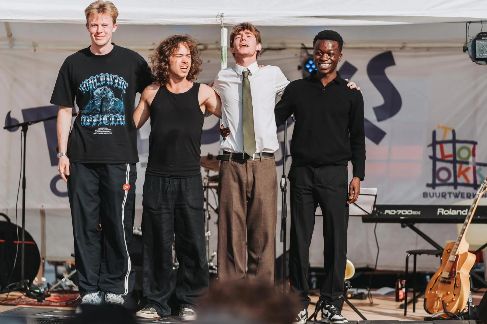
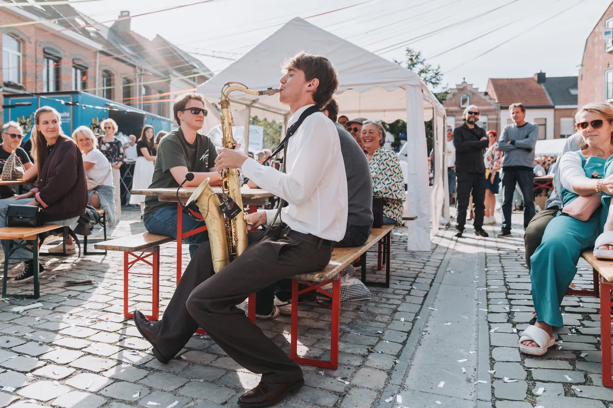
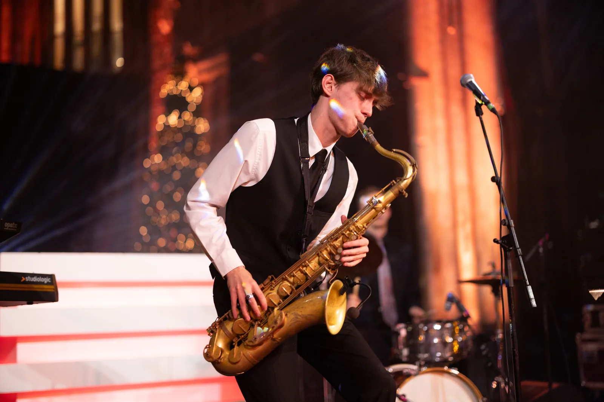
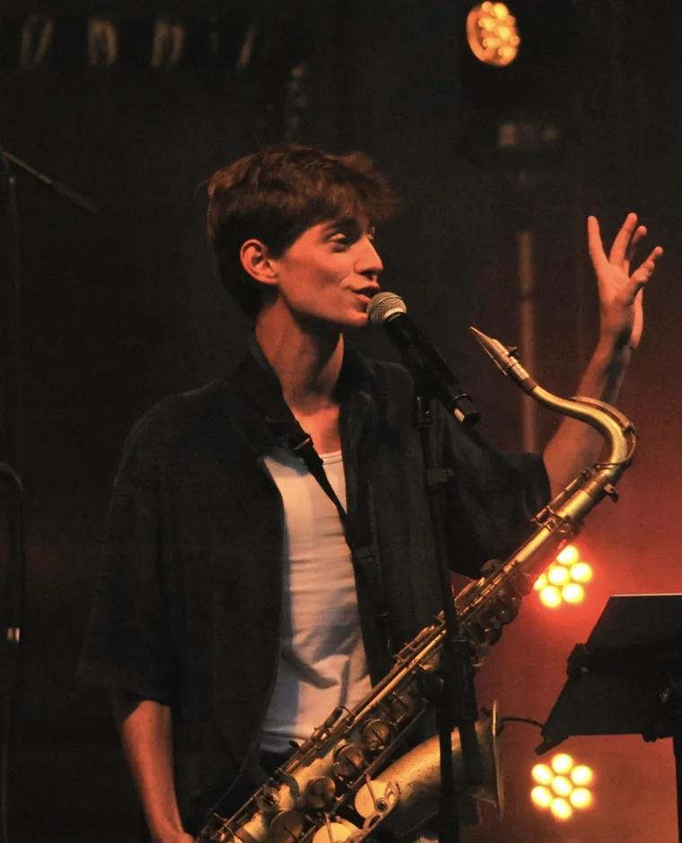
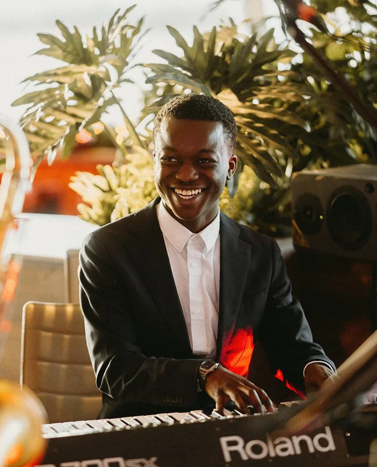
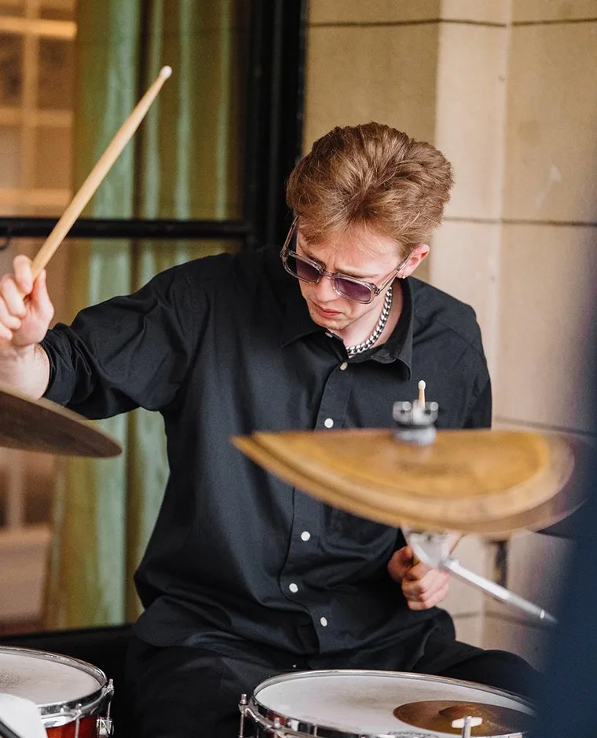

01
Subtiel aanwezig
Nooit te veel, altijd precies genoeg.

Relovation
Relovation ontstond uit een gedeelde passie voor muziek en de overtuiging dat live spelen altijd het verschil maakt.


Robin startte op zijn achtste met de saxofoon en stopte nooit meer. In 2016 leerde hij Lorenzo kennen — een pianist die hem vanaf de eerste repetitie versteld deed staan. Na die repetitie vroeg hij hem om samen te spelen. Zo begon het.
Ze repeteerden, speelden hier en daar, en organiseerden in 2018 hun eerste eigen concert. Het jaar nadien opnieuw. Relovation groeide van daaruit organisch — niet gepland, maar gedragen door de muziek en de mensen errond. Lorenzo is sindsdien een vaste waarde én een goede vriend, en dat hoor je.
Live muziek verandert een moment. Ze maakt een ontvangst warmer, een diner intiemer, een feest onvergetelijk.
Bij elk event voorop
Dat is waar Relovation voor staat — en wat u hoort zodra we beginnen.

Live muziek die met het moment mee ademt
Subtiel aanwezig, muzikaal verfijnd en volledig in dienst van de sfeer
Geen muziek die om aandacht vraagt, maar muziek die het moment optilt. Verfijnd in timing, zacht in présence, sterk in sfeer.
01
Nooit te veel, altijd precies genoeg.
02
We volgen de ruimte, het ritme en het publiek.
03
Tijdloze muziek die klasse toevoegt zonder afstandelijk te worden.

Robin Crauwels
Saxofoon & zang
Finalist van The Voice van Vlaanderen 2021. Zanger in zalen als de Koningin Elisabethzaal, met de Radio 2 Ratpack en de VRT Bigband. U hoort het niveau vanaf de eerste noot.
@robin_crauwels
Lorenzo Nsumbi
Piano
Studeerde aan Codarts Rotterdam en is erbij van het eerste uur. Zijn pianospel is de reden dat Relovation begon.
@lorenzo_on_keys
Joppe Van Noten
Drums
Groeide op in Antwerpen, studeerde aan Codarts Rotterdam. Leidt zijn eigen kwartet en weet precies hoe hij een ruimte in beweging brengt.
@jv_ondrumsTim Pensaert
Bas
Legt de muzikale basis waar alles op rust. Bassist van Meltheads — finalist De Nieuwe Lichting, tweede op Humo's Rock Rally, Pukkelpop — en weet wat het is om een zaal te bewegen.
@timpensaertDe bezetting wordt per event afgestemd op uw wensen en de beschikbaarheid van onze muzikanten.